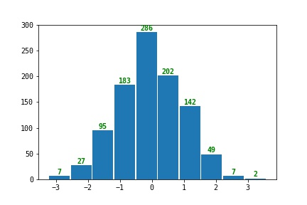
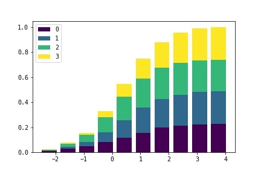
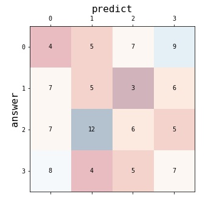
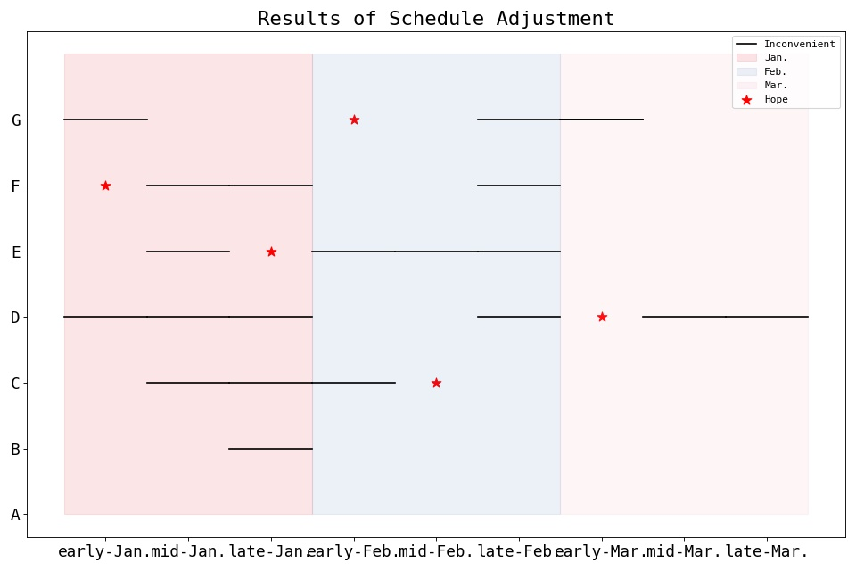
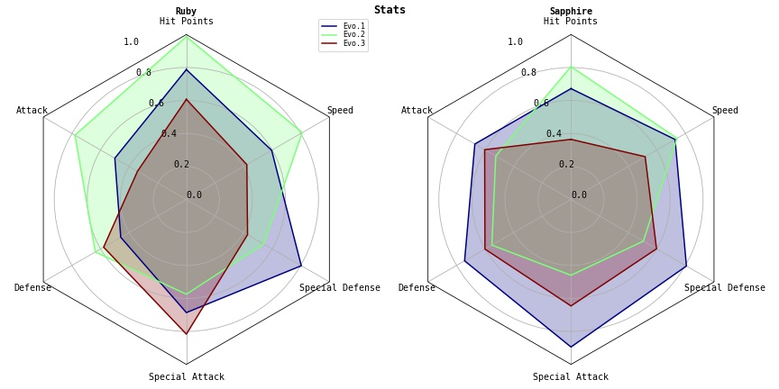

pycharmers.matplotlib.plot2d module¶
-
pycharmers.matplotlib.plot2d.plot_hist(data, bins=None, ax=None, roffset=0.01, rwidth=0.95, hist_color=None, anno_color='green')[source]¶ Plot Histogram
- Parameters
data (array) – Array-like sample data.
bins (int) – Defines the number of equal-width bins in the range.
ax (AxesSubplot) – The
Axesinstance.roffset (float) – Offset from histogram to annotation text.
rwidth (float) – The relative width of the bars as a fraction of the bin width. If
None, automatically compute the width.hist_color (str) – The histogram color.
anno_color (str) – The annotation text color.
Example
>>> import numpy as np >>> import matplotlib.pyplot as plt >>> from pycharmers.matplotlib import plot_hist >>> fig, ax = plt.subplots() >>> data = np.random.RandomState(123).normal(size=1000) >>> ax = plot_hist(data, ax=ax, rwidth=0.95) >>> fig.savefig("matplotlib.plot2d.plot_hist.jpg")
Results

-
pycharmers.matplotlib.plot2d.plot_cumulative_ratio(data, labels=None, bins=10, width=0.8, reverse=False, ax=None, bar=False, cmap=None)[source]¶ Plot Cumulative Ration (bar graph / line graph)
- Parameters
data (array) – Array-like sample data.
labels (array) – Array-like labels.
bins (int) – Defines the number of equal-width bins in the range.
reverse (bool) – Whether plot Reverse cumulative distribution curve or not.
ax (AxesSubplot) – The
Axesinstance.bar (bool) – Whether plot as bar or graph.
cmap (str) – The name of a color map known to
matplotlib
Example
>>> import numpy as np >>> import matplotlib.pyplot as plt >>> from pycharmers.matplotlib import plot_cumulative_ratio >>> ndata = 1000 >>> rnd = np.random.RandomState(123) >>> labels = rnd.randint(low=0, high=4, size=ndata) >>> data = rnd.normal(size=ndata) + labels*0.25 >>> fig, ax = plt.subplots() >>> plot_cumulative_ratio(data, ax=ax, labels=labels, bar=True) >>> ax.legend() >>> fig.savefig("matplotlib.plot2d.plot_cumulative_ratio.jpg")
Results

-
pycharmers.matplotlib.plot2d.plot_classification_performance(cm=None, y_true=None, y_pred=None, cmap='RdBu', answer_label='answer', predict_label='predict', ax=None)[source]¶ Plot model”s classification performance.
- Parameters
cm (array) – Confusion matrix whose i-th row and j-th column entry indicates the number of samples with true label being i-th class and prediced label being j-th class.
y_true (array) – Ground truth (correct) target values.
y_pred (array) – Estimated targets as returned by a classifier.
cmap (str) – The name of a color map known to
matplotlibax (AxesSubplot) – The
Axesinstance.answer_label (str) – The label name on the correct answer side.
predict_label (str) – The label name on the prediction side.
- Returns
An array of
Axesobjects if more than one subplot was created.- Return type
axes (Axes)
Examples
>>> import numpy as np >>> import matplotlib.pyplot as plt >>> from pycharmers.matplotlib import plot_classification_performance >>> fig, ax = plt.subplots(figsize=(5,5)) >>> rnd = np.random.RandomState(123) >>> y_true = rnd.randint(low=0, high=4, size=100) >>> y_pred = rnd.randint(low=0, high=4, size=100) >>> plot_classification_performance(y_true=y_true, y_pred=y_pred, ax=ax) >>> fig.savefig("matplotlib.plot2d.plot_classification_performance.jpg")
Results

-
pycharmers.matplotlib.plot2d.plot_lines(data, ax=None, transpose=False, margin=0.5, label=None, linewidth=None, linestyle=None, color=None, marker=None, **kwargs)[source]¶ Plot lines.
- Parameters
data (array) – Array-like sample data.
ax (AxesSubplot) – The
Axesinstance.transpose (bool) – Whether lines are horizontal or vertical.
margin (float) – Whether plot as bar or graph.
label (str) – The label for line”s” data.
kwargs (dict) – The key word arguments for
matplotlib.lines.Line2D,linewidth,linestyle,color (str),marker
Examples
>>> import matplotlib.pyplot as plt >>> from pycharmers.matplotlib import set_ax_info, plot_lines >>> #=== Data === >>> names = ["A", "B", "C", "D", "E", "F", "G"] >>> dates = ["early-Jan.","mid-Jan.","late-Jan.","early-Feb.","mid-Feb.","late-Feb.","early-Mar.","mid-Mar.","late-Mar."] >>> month_colors = ["#e30013", "#4b73b6", "#f09eb0"] >>> schedule_hope = [None, None, 4, 6, 2, 0, 3] >>> schedule_inconvenient = [[], [2], [1, 2, 3], [0, 1, 2, 5, 7, 8], [1, 3, 4, 5], [1, 2, 5], [0, 5, 6]] >>> num_names = len(names) >>> num_dates = len(dates) >>> #=== Plot === >>> fig, ax = plt.subplots(figsize=(12,8), dpi=80, facecolor="white") >>> ax = plot_lines(data=schedule_inconvenient, ax=ax, transpose=True, color="black", label="Inconvenient") >>> ax.scatter(x=schedule_hope, y=[i for i in range(len(schedule_hope))], color="red", s=100, marker="*", label="Hope") >>> for i,color in enumerate(month_colors): ... ax.fill((i*3-0.5,i*3-0.5,(i+1)*3-0.5,(i+1)*3-0.5), (num_names,0,0,num_names), color=color, alpha=0.1, label=dates[i*3].split("-")[-1]) >>> #=== Decoration === >>> ax = set_ax_info(ax, **{ ... "xticks": {"ticks" : [i for i in range(num_dates)]}, ... "xticklabels": {"labels": dates, "fontsize":16}, ... "yticks": {"ticks" : [i for i in range(num_names)]}, ... "yticklabels": {"labels": names, "fontsize":16}, ... "title": {"label": "Results of Schedule Adjustment", "fontsize":20}, >>> }) >>> ax.legend() >>> plt.tight_layout() >>> fig.savefig("matplotlib.plot2d.plot_lines.jpg")
Results

-
pycharmers.matplotlib.plot2d.plot_radar_charts(data, varlabels=[], colors=[], datalabels=[], plottitles=[], frame='Circle', radii=[0.0, 0.2, 0.4, 0.6, 0.8, 1.0], title='', cmap='jet', ncols=1, fig=None, ax=None, figsize=4, 4)[source]¶ Plot radar charts.
- Parameters
data (np.ndarray) – Array-like sample data. shape=(
nplots,ndata,nvars)varlabels (list) – Array-like labels of varnames. (
len(varlabels)==nvars)colors (list) – Colors for each variables.
len(colors)==ndatadatalabels (list) – Array-like labels of data. (
len(datalabels)==ndata)plottitles (list) – Array-like labels of plot titles. (
len(plottitles)==nplots)frame (str) – Shape of frame surrounding axes. (
"Circle", or"polygon")radii (list) – The radii for the radial gridlines. (default=
[0.2,0.4,0.6,0.8])title (str) – Figure title.
cmap (str / matplotlib.colors) – Color map.
ncols (int) – The number of columns.
fig (Figure) – The
Figureinstance.ax (Axes) – The
Axesinstance.figsize (tuple) – The figure size for
1plot.
Examples
>>> import numpy as np >>> import matplotlib.pyplot as plt >>> from pycharmers.matplotlib import plot_radar_charts, mpljapanize >>> data = np.random.RandomState(123).uniform(low=0.3, high=1.0, size=(2,3,6)) >>> varlabels = ["Hit Points", "Attack", "Defense", "Special Attack", "Special Defense", "Speed"] >>> datalabels = ["Evo.1", "Evo.2", "Evo.3"] >>> plottitles = ["Ruby", "Sapphire"] >>> fig = plt.figure(figsize=(12,6)) >>> fig.text(x=0.5, y=0.965, s="Stats", horizontalalignment="center", color="black", weight="bold", size="large") >>> axes = plot_radar_charts(data=data, varlabels=varlabels, datalabels=datalabels, plottitles=plottitles, cmap="jet", fig=fig, ncols=2) >>> fig.tight_layout() >>> fig.savefig("matplotlib.plot2d.plot_radar_charts.jpg")
Results
framefigure
Circle
polygon
